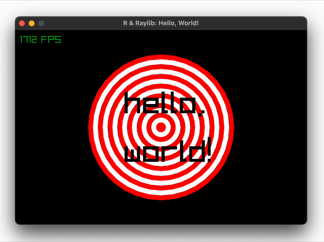
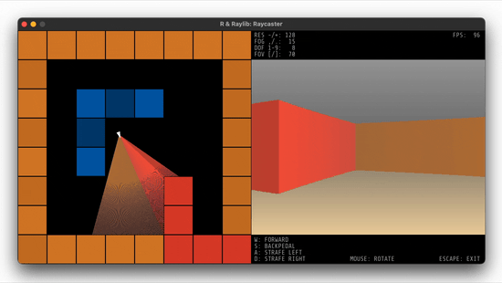
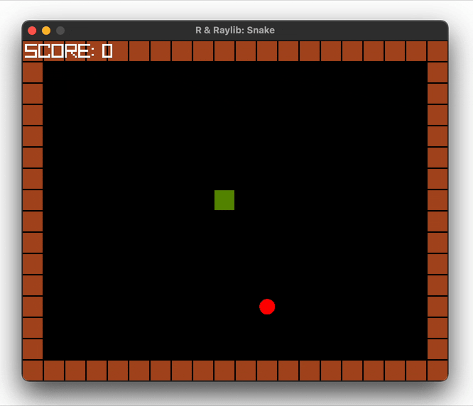
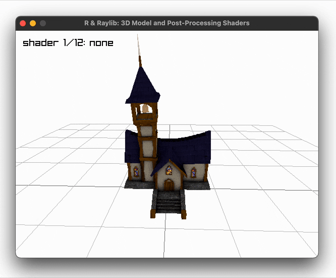
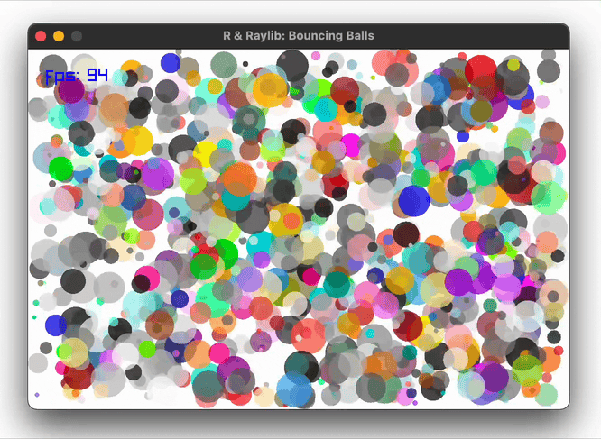
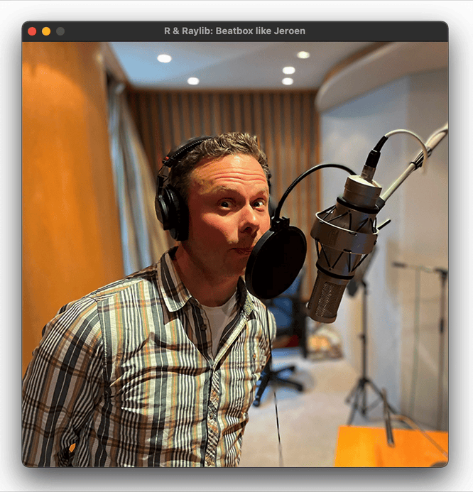

This R package wraps Raylib, a simple and easy-to-use library to enjoy videogames programming.
Installation
You can install the development version of raylibr from GitHub with:
remotes::install_github("jeroenjanssens/raylibr")raylibr is tested regularly on macOS, Linux, and Windows.
Features
Raylib, the C library that the raylibr package wraps, enables you to work with:
- Real-time 2D and 3D graphics
- Keyboard and mouse interactivity
- Music and sound effects
- Physics simulations and collision detection
- Animated models and shaders
- Multitouch, gesture recognition, and even VR headsets
The raylibr package allows you to do all of this from R, and adds the following usability improvements for R users:
- Function and class names are in snake_case (instead of PascalCase used by Raylib)
- Use R vectors and matrices (they’re automatically converted to Raylib’s
Vector2,Vector3, etc.) - Vectorized drawing functions (enjoy buttery-smooth animations by letting C++ do the looping)
- Use R color names (e.g., use
"hotpink"instead of0xff69b4fforlist(r = 255, g = 105, b = 180)) - Use only 8 keys to get started (because
raylibris an anagram oflibrary)
Examples
Here’s a “Hello, World!” script to give you an idea of how to use raylibr. You can run this script using demo("helloworld", package = "raylibr").
library(raylibr)
init_window(600, 400, "R & Raylib: Hello, World!")
while (!window_should_close()) {
alpha <- abs(sin(get_time()))
begin_drawing()
clear_background("black")
draw_circle(300, 200, seq(150, 10, by = -10), c("red", "white"))
draw_text(c("hello,", "world!"), 225, c(120, 220), 64, fade("black", alpha))
draw_fps(10, 10)
end_drawing()
}
close_window()This script produces the following animation:

While basic, it illustrates how to create a window, how to draw shapes (in a vectorized manner), and how to work with colors. Just imagine what you can do if you add a little keyboard interactivity and some sound effects!
Below are a few more examples to whet your appetite. Run demo(package = "raylibr") to see all available demos in R or visit Raylib’s examples page to see even more examples in C.
Build your own raycaster
Run demo("raycaster", package = "raylibr") to reminisce the 90s and learn how raycasters work. Source: demo/raycaster.R

Play a game of snake
Run demo("snake", package = "raylibr") to play this game. Use the arrow keys to control the snake. Source: demo/snake.R

Load 3D models and apply post-processing shaders
Run demo("model", package = "raylibr") to play this demo. Select a different shader with the left and right arrow keys. Source: demo/model.R

Bounce thousands of transparent balls
Run demo("balls", package = "raylibr") to play this demo. Source: demo/balls.R

Animate cubes while playing music
Run demo("cubes", package = "raylibr") to play this demo. Source: demo/cubes.R

Beatbox like Jeroen
Run demo("beatbox", package = "raylibr") to drop some beats. Press the [a-zA-Z] keys to play the 52 samples recorded by yours truly. Silence the cacophony by pressing Space. Source: demo/beatbox.R

Acknowledgements
- Ramon Santamaria for creating Raylib, the C library that makes this all possible.
- Dirk Eddelbuettel and others for creating the Rcpp package, which enables the interface with Raylib.
- Mike FC for showing me how to expose C structs as R objects.
-
Jared Lander and team for allowing me to present about R & Raylib at the NYR Conference 2022.
-
David Robinson for encouraging me to put
raylibron GitHub. -
raylibr’s contributors for improvingraylibrby submitting issues and pull requests.